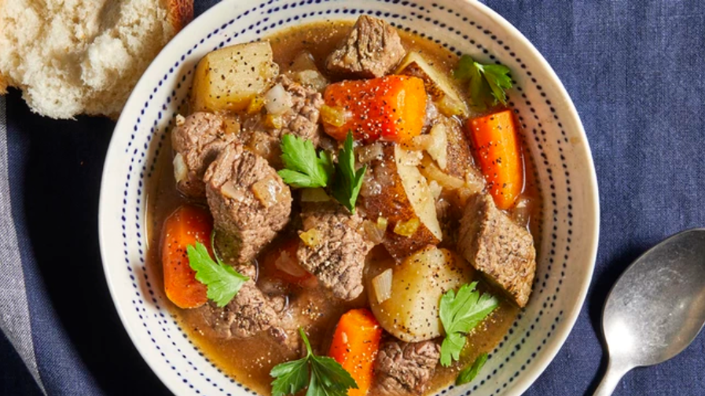

Slow Cooker Beef Stew

This slow cooker beef stew is the perfect low maintenance meal for chilly
fall and winter nights. Full of cozy flavor and hearty
ingredients,
this beef stew recipe will warm you up from the inside out.
ingredients needed to make the dish
- 2 pounds beef stew meat, cut into 1-inch pieces
- ¼ cup all-purpose flour
- 1 ½ cups beef broth
- 1 teaspoon Worcestershire sauce
- 1 clove garlic, minced
- 1 large bay leaf
- 3 medium potatoes, diced
Steps
- Gather ingredients.
- Place meat in slow cooker.
- Mix flour, salt, and pepper together in a small bowl. Pour over meat, and stir until meat is coated.
- Add beef broth, carrots, potatoes, onion, celery, Worcestershire sauce, paprika, garlic, and bay leave; stir to combine.
- Cover, and cook until beef is tender enough to cut with a spoon, on Low for 8 to 12 hours, or on High for 4 to 6 hours.
- Serve hot and enjoy!